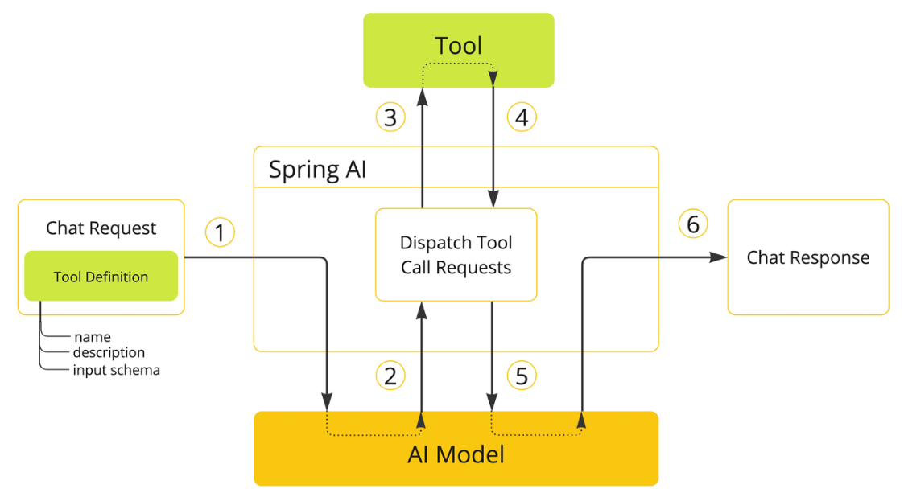
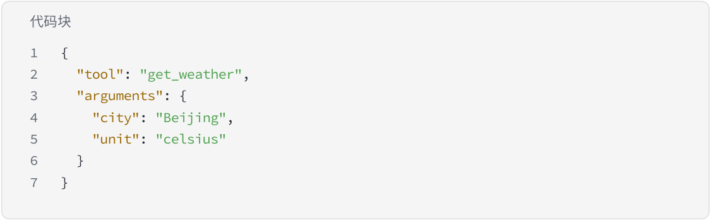

Tool Calling
在大模型应用的发展过程中，人们逐渐发现，仅依靠语言模型本身的推理能力，很难完成复杂的真实 世界任务。例如查询数据库、访问搜索引擎、调用企业内部 API、执行代码、或者访问外部系统资源， 这些能力都超出了语言模型原本的能力范围。 因此，Tool Calling（工具调用）机制成为构建 AI Agent 的核心能力之一，它使得大模型不仅能 够“思考”和“生成文本”，还能够调用外部工具完成实际任务。

简单来说，Tool Calling 的本质就是：
让大模型在推理过程中，根据任务需要，自动选择并调用外部工具，从而扩展自身能力。 在现代 AI Agent 架构中，Tool Calling 已经成为连接 LLM 与真实世界系统 的关键桥梁。 一个典型的 Tool Calling 流程通常如下：
1 User Input 2↓3 LLM Reasoning 4↓5 Tool Selection 6↓7 Tool Execution 8↓
9Result Returned to LLM
10 ↓
11Final Response
在这个过程中，大模型不仅负责理解用户意图，还需要判断是否需要调用工具，并决定调用哪个工具 以及传递哪些参数。
Tool 定义
在 AI Agent 系统中，Tool（工具）可以理解为一种可被大模型调用的能力接口。 它可以是一个函数、一个 API、一个数据库查询接口，甚至是一个复杂的业务系统。 从抽象角度来看，一个 Tool 通常包含三个核心部分：
1. Tool Name
工具的唯一名称，用于让模型识别和选择工具。例如：
-
search_web -
get_weather -
query_database -
send_email
名称需要清晰表达工具功能，以帮助模型更准确地进行选择。
2. Tool Description
工具的功能描述，用于告诉大模型：
-
这个工具可以做什么
-
在什么情况下应该使用它
-
输入参数代表什么含义
例如：
1Get the current weather of a city.
2Use this tool when the user asks about weather.
描述越清晰，大模型在推理时选择正确工具的概率就越高。
3. Tool Parameters
工具的输入参数定义，包括参数名称、数据类型以及含义说明。例如：
1city: string
2unit: celsius | fahrenheit
这些参数会在模型决定调用工具时，由模型自动生成对应的参数值。
Tool Schema
为了让大模型能够正确理解工具结构，系统通常需要使用 Schema（结构定义） 来描述 Tool。 目前主流的工具描述方式通常基于 JSON Schema。
一个典型的 Tool Schema 示例：
1 { 2 "name": "get_weather", 3 "description": "Get the current weather of a city", 4 "parameters": { 5 "type": "object", 6 "properties": { 7 "city": { 8 "type": "string", 9 "description": "The name of the city" 10 }, 11 "unit": { 12 "type": "string", 13 "enum": ["celsius", "fahrenheit"] 14 } 15 }, 16 "required": ["city"] 17 } 18 }
该 Schema 向大模型清晰地描述了以下信息：
-
工具名称：
get_weather -
工具功能：查询城市天气
• 参数结构：
◦ city ：城市名称
◦ unit ：温度单位
• 必填参数： city
当用户提出请求，例如：
1 代码块北京今天的天气怎么样？
模型在推理后可能生成如下 Tool 调用：

代码块
1 {
2 "tool": "get_weather",
3 "arguments": {
4 "city": "Beijing",
5 "unit": "celsius"
6 }
7 }
系统收到该调用后，执行对应工具，并将结果返回给模型。
Tool Calling 的核心优势
相比传统的纯文本生成方式，Tool Calling 为 AI Agent 带来了几个关键能力。
首先是能力扩展（Capability Extension）。 通过工具调用，大模型可以访问实时数据、调用计算程序、执行复杂任务，从而突破语言模型本身的 能力限制。
其次是系统集成能力（System Integration）。 企业可以将内部系统（如 CRM、ERP、数据库、搜索服务等）封装为工具，使 AI Agent 成为统一的智 能入口。
第三是结构化执行（Structured Execution）。 由于工具使用标准 Schema 描述，因此工具调用过程是可控和可验证的，这对于生产级 AI 系统非常重 要。
最后是可组合性（Composable Architecture）。 多个 Tool 可以组合形成复杂工作流，使 Agent 能够逐步完成复杂任务。
Tool Calling 在 Agent 系统中的作用
在现代 AI Agent 架构中，Tool Calling 通常承担以下角色：
-
能力扩展层（Capability Layer） 为 LLM 提供额外能力，例如搜索、计算、数据库访问等。
-
系统接口层（Integration Layer） 将企业系统、API 服务和外部平台统一封装为工具。
-
任务执行层（Execution Layer） 在 Agent 推理过程中执行实际操作。
因此，一个成熟的 Agent 系统通常会维护一个 Tool Registry（工具注册表），用于管理所有可调用工 具，并在推理时提供给大模型。
Tool Calling 的发展趋势
随着 AI Agent 技术的发展，Tool Calling 正在从简单的函数调用机制，逐渐演进为更完整的 Agent 工 具生态。
例如：
-
Function Calling：大模型直接生成函数调用
-
Tool Use Reasoning：模型通过多步推理选择工具
-
Tool Planning：模型规划多个工具组合使用
-
MCP（Model Context Protocol）：统一工具和资源访问协议